| 1-2. s = 1 Trivial. | 3. s = 3/2 = 1.5 Trivial. | 4. 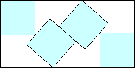 s = 1.930+ Found by Evert Stenlund in June 2010. |
5-8. s = 2 Trivial. | 9. 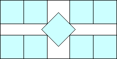 s = 2 + √2/3 = 2.471+ Found by Evert Stenlund in June 2010. | 10. s = 5/2 = 2.5 Trivial. |
| 11. 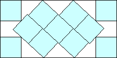 s = 2.779+ Found by Evert Stenlund in June 2010. | 12. 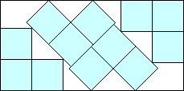 s = 6 (1 + √2) / 5 = 2.897+ Found by Maurizio Morandi in June 2010. | 13. 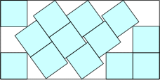 s = 2.976+ Found by David W. Cantrell in July 2012 (after Maurizio Morandi in June 2010.) |
| 14-18. s = 3 Trivial. | 19. 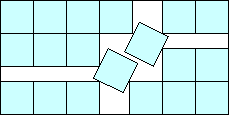 s = 3 + 1/√5 = 3.447+ Found by Maurizio Morandi in June 2010. | 20-21. s = 7/2 = 3.5 Trivial. |
| 22. 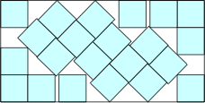 s = 3.745+ Found by David W. Cantrell in July 2012 (after Maurizio Morandi in June 2010.) | 23. 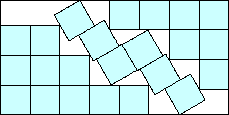 s = 3.849+ Found by Maurizio Morandi in June 2010. | 24. 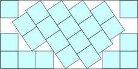 s = 3.882+ Found by DC after MM in August 2012. |
| 25. 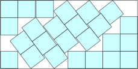 s = 3.939+ Found by DC after MM in August 2012. | 26. 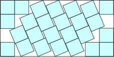 s = 3.981+ Found by David W. Cantrell in July 2012 (after Maurizio Morandi in July 2012.) | 27-32. s = 4 Trivial. |
| 33. 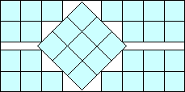 s = 3 + √2 = 4.414+ Found by Maurizio Morandi in July 2012. | 34. 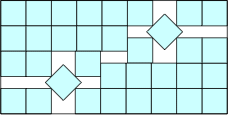 s = 4 + √2/3 = 4.471+ Found by David W. Cantrell in July 2012. | 35-36. s = 9/2 = 4.5 Trivial. |
| 37. 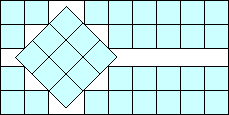 s = 10 / 3 + √2 = 4.747+ Found by Maurizio Morandi in August 2012. | 38. 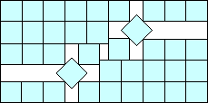 s = (13 + √2) / 3 = 4.804+ Found by Maurizio Morandi in August 2012. | 39. 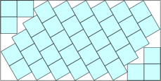 s = 4.839+ Found by David W. Cantrell in August 2012. |
| 40. 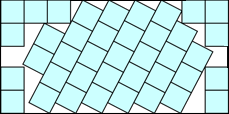 s = 4.903+ Found by Sigvart Brendberg in June 2023. | 41. 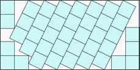 s = 4.927+ Found by Sigvart Brendberg in June 2023. | 42. 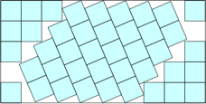 s = 4.989+ Found by David W. Cantrell in August 2012. |
| 43-50. 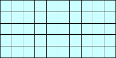 s = 5 Trivial. |